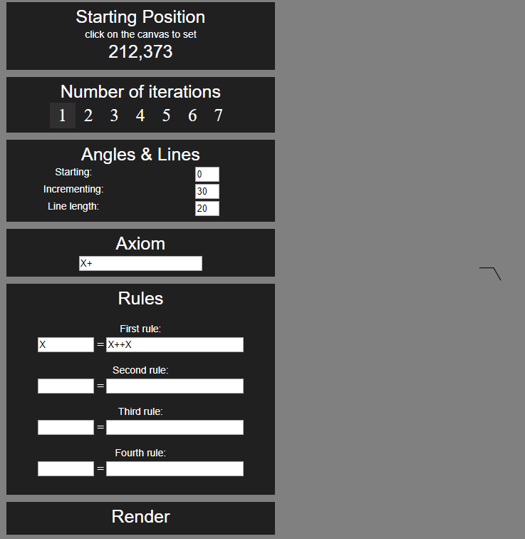

L-fractr
Aplicatie web din cadrul cursului "Dezvoltarea aplicatiilor web la nivel de client"
Autori
- Stefan Cojocaru
- Monica Ivan
Afilieri
- Dezvoltarea aplicatiilor web la nivel de client, Facultatea de Informatica — Iasi, Iasi, Romania
Introducere
Acest proiect are ca principal scop creearea unui mediu in care cei interesati de fractali de tip Lindenmayer isi pot testa expresiile regulate si pot vedea diverse exemple de sisteme Lindenmayer.
Cerinta proiectului
Să se implementeze un editor şi generator vizual de fractali de tip Lindenmayer (L-systems), oferind reprezentări alternative de tip raster (imagini în format PNG) şi vectorial (documente SVG) ce pot fi prelucrate pe client. De asemenea, instrumentul Web va pune la dispoziţie o listă predefinită de fractali de tip Lindenmayer, utilizatorul având posibilitatea gestionării şi salvării/încărcării local şi de la distanţă a acestora. Bonus: oferirea de vizualizări 3D via WebGL.
Modul de lucru la proiect
Avem setate deadline-uri pentru a termina pagina la care am ales sa lucram in etapa curenta, iar odata ajuns la deadline ne intalnim pentru a stabili etapa urmatoare in dezvoltarea proiectului. De asemena, avem stabilite intalniri periodice pentru a discuta si a cere ajutor, daca e nevoie, cu privire la componentele curente. Tot odata, utilizam repository-ul de github pentru a putea tine evidenta versiunilor si a distribui codul mai usor.
Functionalitatea aplicatiei
Aplicatia web contine 3 pagini. Prima pagina, index.html, continte linkuri catre celalte componente ale proiectului, dar si catre repository-ul de github, pagina corespunzatoare cursului de dezvoltare a aplicatiilor web si pagina de Wikipedia de pe care cei interesati pot afla mai multe despre fractalii Lindenmayer. Cea de a doua pagina, createOwn.html, pune la dispozitie utlizatorilor o unealta prin care acestia pot creea si vizualiza fractali. Acestia pot oferi ca input pentru generatorul de fractali informatii precum punctul din care sa inceapa, axioma de inceput, regulile de rescriere, numarul de iteratii si unghiuri care vor fi folosite in desenarea fractalului. Tot odata, aceasta pagina ofera utilizatorilor posibilitatea de a salva munca lor in diverse formate. Cea de a treia pagina, premade.html, pune la dispozitie utilizatorilor o galerie cu diverse exemple de fractali si datele de input care vor fi folosite pentru generarea acestora.
Interactiuni
Utilizatorului i se ofera doua module ale aplicatiei cu care sa interactioneze: Galeria, in care clientul poate descoperi diverse modele de fractali si metode de generare ale acestora, si Componenta propriu-zisa de desenare de fractali. Aceasta din urma preia de la utilizatori date precum pozitie de start, numar de iteratii, unghiuri, axioma si reguli procesare a literalilor si genereaza un fractal pe care clientii il pot salva la nivel local sau in baza noastra de date. La salvarea datelor in baza noastra de date au acces doar utilizatorii care sunt inregistrati pe platforma noastra, celor neinregistrati fiindu-le restrictionat accesul.
Tehnologii implicate
Aplicatia nu are in spate un server, asadar pentru gestionarea utilizatorilor si salvarea datelor folosim Firebase, oferit de Google. Firebase permite stocarea datelor de autentificare a unui client asigurand securitatea datelor prin hashurarea parolelor. De asemenea permite crearea unei baze de date structurate, facilitand accestul fisierelor la distanta.
Atat inregistrarea cat si logarea se realizeaza cu ajutorul "promisiunilor" returnate de functiile: firebase.auth().createUserWithEmailAndPassword(email, password), respectiv firebase.auth().signInWithEmailAndPassword(email, password). Exemplu de logare:
loginBtn.addEventListener('click', e => {
console.log("login")
const email = txtEmail.value;
const pass = textPsw.value;
const auth = firebase.auth();
if(validateEmail(email))
{
const promise = auth.signInWithEmailAndPassword(email, pass);
promise.catch(e => console.log(e.message));
exitModal();
}
});
Structura datelor
Datele preluate de la utilizatori (pozitie de start, numar de iteratii, unghiuri, axioma si reguli procesare a literalilor) sunt gestionate de clasa InputHandler. Punctele in spatiu sunt pastrate intr-o lista de instante ale clasei Point din clasa Renderer. Aceasta din urma se ocupa cu generarea regulii de desenare a fractalului prin metoda expandAxiom(), care mai apoi va fi folosita pentru generarea punctelor ce urmeaza sa fie desenate (metoda generatePoins()) si de desenarea acestora in elementul HTML Canvas (metoda drawOnCanvas()). In ultimul rand clasa File se ocupa cu salvarea datelor sub forma de fisier png sau svg la nivel local sau la distanta in Firebase.

Crearea fractalilor
Pentru a genera un fractal utilizatorul trebuie sa furnizeze un punct din plansa, in care isi va avea originea desenul, numarul de iteratii pentru generarea fractalului, unghiurile de start si de incrementare, lungimea liniei care se va folosi pentru a desena, axioma (expresia de la care se porneste generarea) si regulile pe baza carora se creeaza fractalul. Algoritmul de generare a fractalilor urmeaza 3 pasi: culegerea datelor, expansiunea axiomei si desenarea fractalului. Primul pas, cel de culegere, ia inputul dat de utilizator, creeaza o noua instanta a clasei fractGen, ofera constructorului obiectului datele de input si apeleaza algoritmul de generare. Acest algoritm cuprinde pasii doi si trei. In etapa de expansiune, programul parcurge de n ori, n fiind numarul de iteratii alese de utilizaztor, axioma data, iar pe baza regulilor o extinde. Spre exemplu, pentru axioma "X+" si regula "X = X++X" algoritmul va parcurge axioma, va gasi literalul "X"si il va inlocui cu "X++X" conform regulii date, dar pentru simbolul "+", care nu este un literal, nu va face nimic. Astfel, dupa o iteratie axioma va fi schimbata in "X++X+". In final, pasul de desenare parcurge varianta finala a axiomei, iar pentru fiecare caracter intalnit realizeaza o actiune specifica. Intalnirea unui literal inseamna "cauta urmatorul punct si deseneaza catre el", simbolul "+" se traduce ca "incrementeaza unghiul curent", simbolul "-" inseamna "decrementeaza unghiul curent", "[" salveaza punctul curent, iar "]" se intoarce la punctul salvat care ii corespunde (adica pentru o axioma de forma "[x[x]]" prima paranteza inchisa se va intoarce la a doua paranteza deschisa, iar a doua paranteza inchisa la prima paranteza deschisa).Exemplul oferit la pasul anterior ii spune programului ca trebuie sa deseneze o linie, sa incrementeze unghiul, sa incrementeze unghiul, deseneaza o linie si incrementeaza iar unghiul o linie. De fiecare data cand algoritmul trebuie sa deseneze o linie, deoarece a intalnit un literal, se creeaza o linie de cod in format svg care specifica punctele intre care se deseneaza. Aceste linii de cod sunt salvate intr-un batch, iar la finalul rularii algoritmului ele sunt adaugate in codul HTML al paginii.
Autentificarea
Salvarea Fractalilor
Cum am mentionat mai sus in sectiunea "Tehnologii implicate", am folosit Firebase atat pentru autentificare si salvarea datelor confidentiale utilizatorului, cat si pentru a stoca fractalii creati de utilizator. Folosing Firebase Realtime Database, la inregistrarea fiecarui utilizator nou cream un nou folder pentru acesta, unde ii vor fi stocate datele. Fiecare fractal este salvat ca un json sub forma:
Pentru salvarea imaginilor local, am folosit biblioteca FileSaver.js. Am creat o metoda save(blob, filesize) folosita drept callback functiei svgString2Image, menite sa alipeasca stringului svg atributele necesare salvarii png. Atat pentru imagini cu extensia .png, cat si .svg am folosit metoda specifica bibliotecii FileSaver, si anume saveAs(dataBlob, name).
fractalName: {
axiom: "axiom",
imgRef: "svgText",
incrementingAngle: 0,
numberOfIterations: 0,
rule1Expr: "",
rule1Lit: "",
rule2Expr: "",
rule2Lit: "",
rule3Expr: "",
rule3Lit: "",
rule4Expr: "",
rule4Lit: "",
startingAngle: 0,
startingPositionX: 0,
startingPositionY: 0
}
Stadiul actual al proiectului
La data de 1.11.2018 proiectul se afla in faza de prototip nefunctional.
Update: La data de 5.12.2018 arhitectura proiectului este definita, iar acesta se afla in faza de prototip nefunctional.
Update: La data de 17.01.2019 proiectul este final.
Bibliografie
- The Algorithmic Beauty of Plants , autor Springer Verlag ; publicat in .
- Mathematical Models for Cellular Interactions in Development , autor Aristid Lindenmayer ; publicat in .
- L-systems , autor Unknown, Wikipedia ; publicat in .
- W3Schools , autor Refnes Data ; publicat in .